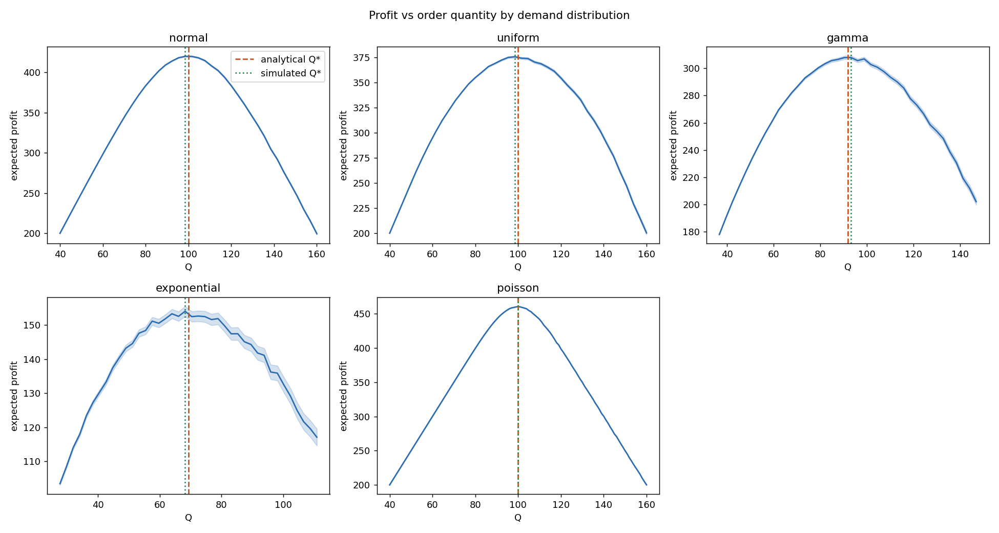
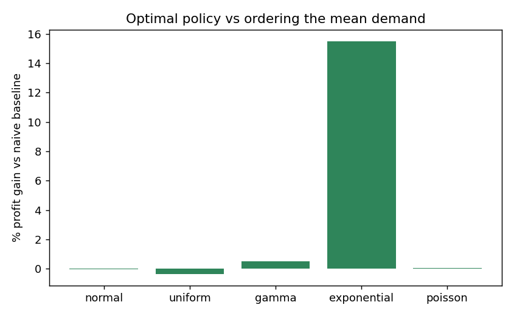

Monte Carlo Simulation of the Newsvendor Problem
My role
Sole author: problem framing, simulation code, experimental design, analysis and report.
Problem
A seller must choose how much to order before demand is known: too much leaves unsold stock, too little loses sales. With price $12, cost $7 and salvage $2, the optimal order sits at the critical fractile of 0.5, which for continuous demand is the median. The project asks how well simulation recovers that optimum and when optimizing is worth the effort.
Approach
A Python Monte Carlo framework evaluates expected profit across order quantities for five demand distributions with the same mean of 100 (normal, uniform, gamma, exponential, Poisson). Four experiments: profit curves, validation against the analytical optimum over 100 replications, a comparison of the naive mean-demand policy against the optimal policy using 95% confidence intervals, and a factorial sensitivity study over critical fractile and demand variability. All results are reproducible from a fixed seed.
Results
| Distribution | Mean error of simulated optimum | Profit gain, optimal vs. mean policy |
|---|---|---|
| Normal | 0.20% | -0.1% (not significant) |
| Poisson | 0.54% | 0.1% (not significant) |
| Uniform | 1.45% | -0.3% (not significant) |
| Gamma | 3.00% | 0.5% |
| Exponential | 5.25% | 15.5% (intervals do not overlap) |
The simulated optimum tracks the analytical solution closely. The key finding is that the value of optimizing depends on skew, not variance alone: where the mean and median coincide, ordering the mean is just as good, but for the heavily skewed exponential the mean is far above the median and the optimal order lifts profit by 15.5%. In the sensitivity study, at a fractile of 0.9, raising demand variability from CV 0.10 to 0.40 increases the optimal order by 34%, while at 0.3 it lowers it by 17%.


Limitations: single period, normal demand only in the sensitivity study, and no real demand data. Extensions include multi-period policies, parameter uncertainty and ranking-and-selection procedures.